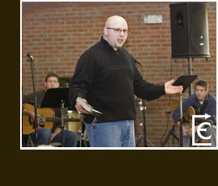
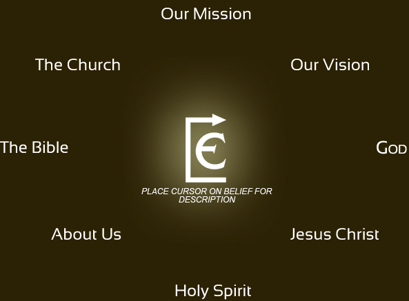

We value 5 things:
Worship - welcoming, creative and honest worship that focuses on Jesus Christ and the Word of God.
Hospitality - making space for life-giving community where people are welcome wherever they're at in their journey
Service - ushering in the Kingdom of God individually and corporately; making this place more like heaven where justice, peace, and mercy reign.
Faith - each person growing in the likeness of Christ through worship, service and discipleship
Family - spouses, singles, children, parents, and church family becoming healthy and life-giving
